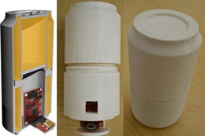

Ifeoma Nwogu, Smriti Jha, Lora Cavuoto, Heamchand Subrayan, Jeanne Langan
The purpose of this research project is to develop novel and innovative, home-based stroke rehabilitation assistive devices. So far,
in this work, we have built an embedded "smart can" (shown below).In general today, when post-stroke patients complete their formal therapies,
they are provided only with written home exercise programs prescribed by their therapists, and these are commonly discontinued after a period of
time. In general, compliance with written home exercise is low, but compliance with home exercise tools has been shown to be high. To this end,
an integrated team of scientists at UB are working on designing and deploying assistive technology devices, aimed at improving compliance primarily
via objective feedback and personalization.

We therefore present the computer vision and graphics techniques employed in this research work, such as one-shot object detection, incremental
visual tracking, activity recognition, and 3D virtual augmentation. These vision techniques are exploited in the context of enhancing objective
feedback on exercise performance and tailoring exercise programs to appropriately challenge participants. For experimental analysis, we record
30 videos of five non-stroke participants performing three pre-specified tasks twice - normally and with jerky movements. We successfully
demonstrate the efficacies of the computer vision components of the system in the lab setting and going forward, additional usability tests
will be performed to optimize the system to the specific needs of its targeted users.
Awards and Papers
-
Innovative Micro-Programs Accelerating Collaboration in Themes (IMPACT) -Internal UB award
Title : Portable Measurement Devices to Provide Feedback and Enhance Self-Management in Chronic Stroke Rehabilitation
PI: Lora Cavuoto; Co-Investigators: Ifeoma Nwogu, Jeanne Langan, Heamchand Subrayan
-
Vision-Augmented Home-based Stroke Rehabilitation Device
Smriti Jha, Ifeoma Nwogu, Lora Cavuoto, Heamchand Subrayan, Jeanne Langan
(In submission) Elsivier Journal on Computer Vision and Image Understanding (CVIU)
Videos and Images
-
Here are the image results from the CVIU submission. First the performance of the one-shot object detection algorithm:
The results of auto-detection on the first frames of 30 test videos are shown.
-
Next are sample videos from the experiments showing two of the exercise tasks;
The first two videos show a participant drinking with normal movements and the virtual rendition of the can motion based on the video.
Next twos video show a participant pouring with jerky movements and its virtual rendition. Click on images to play videos.
-
Videos comparing the tracking results from the incremental visual tracker we used to those from the traditional particle filter-based tracker:
-
Information about the IMU sensors embedded in this first generation of the device can be found here.
The accelerometer dataseheet can be accessed here.
Trouble viewing the videos? Please email me if there are any problems viewing the videos.
The windows media player should be able to show them on windows. On a Mac, they can be readily viewed
with Quicktime.
Code and data
To be released...
Last updated: 2022-09-15